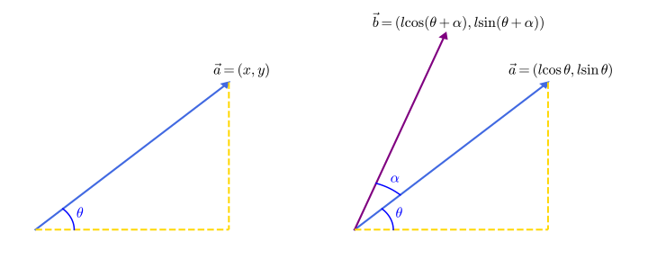

OI Wiki · prijevod · MatematikaOI Wiki · translation · Mathematics
VektoriVectors
Sadržaj
Prije samog teksta posebno napominjemo nešto o prijevodu. Iz povijesnih razloga matematika i fizika različito prevode riječ „vector” na kineski.
U fizici se obično prevodi kao „矢量” (shǐliàng, „strelična veličina”), nasuprot pojmu „标量” (skalar). U matematici se obično prevodi kao „向量” (xiàngliàng, „usmjerena veličina”). Slične razlike u prijevodu postoje i između „本征” i „特征” (za „eigen-”), „幺正” i „酉” (za „unitaran”) itd.
Budući da je OI Wiki namijenjen prvenstveno računarstvu i srodnim inženjerskim disciplinama, koje su bliže matematici, koristi se riječ „向量”.
Definicija i srodni pojmovi
Vektor: veličina koja ima i iznos i smjer zove se vektor. U matematici se proučavaju slobodni vektori, tj. vektori kojima se početna i završna točka mogu proizvoljno paralelno pomicati dok god se ne mijenjaju njihov iznos i smjer. Označava se \(\vec a\) ili \(\boldsymbol{a}\).
Usmjerena dužina: dužina kojoj je pridružen smjer zove se usmjerena dužina. Usmjerena dužina ima tri elementa: početnu točku, smjer i duljinu; kad su ta tri elementa poznata, završna je točka jednoznačno određena. Vektori se obično prikazuju usmjerenim dužinama.
Modul vektora: duljina usmjerene dužine \(\overrightarrow{AB}\) zove se modul vektora, tj. iznos tog vektora. Označava se \(|\overrightarrow{AB}|\) ili \(|\boldsymbol{a}|\).
Nulvektor: vektor modula \(0\). Smjer nulvektora je proizvoljan. Označava se \(\vec 0\) ili \(\boldsymbol{0}\).
Jedinični vektor: vektor modula \(1\) zove se jedinični vektor tog smjera. Obično se označava \(\vec e\) ili \(\boldsymbol{e}\).
Paralelni vektori: dva nenul vektora istog ili suprotnog smjera. Označava se \(\boldsymbol a\parallel \boldsymbol b\). Za više međusobno paralelnih vektora može se povući bilo koji pravac paralelan s tim vektorima, pa se svaka skupina paralelnih vektora može translatirati na isti pravac; zato se paralelni vektori zovu i kolinearni vektori.
Jednaki vektori: vektori jednakog modula i istog smjera.
Suprotni vektori: vektori jednakog modula i suprotnog smjera.
Kut između vektora: za dva nenul vektora \(\boldsymbol a,\boldsymbol b\) nanesimo \(\overrightarrow{OA}=\boldsymbol a,\overrightarrow{OB}=\boldsymbol b\); tada je \(\theta=\angle AOB\) kut između vektora \(\boldsymbol a\) i vektora \(\boldsymbol b\). Označava se \(\langle \boldsymbol a,\boldsymbol b\rangle\). Očito, za \(\theta=0\) vektori su istog smjera, za \(\theta=\pi\) suprotnog smjera, a za \(\theta=\frac{\pi}{2}\) okomiti su, što se označava \(\boldsymbol a\perp \boldsymbol b\); pritom se dogovorno uzima \(\theta \in [0,\pi]\).
Uočimo da ravninski vektori imaju smjer, pa se dva vektora ne mogu uspoređivati po veličini (mogu se uspoređivati samo njihovi moduli). Dva vektora ipak mogu biti jednaka.
Linearne operacije s vektorima
Zbrajanje i oduzimanje vektora
Nakon što se definira neka veličina, želimo s njom i računati. Operacije s vektorima mogu se uvesti po analogiji s operacijama s brojevima, a mogu se proučavati i s gledišta fizike.
Po analogiji s pojmom pomaka u fizici: ako osoba iz \(A\) preko \(B\) dođe u \(C\), njezin je pomak \(\overrightarrow{AB}+\overrightarrow{BC}\), što je zapravo isto kao da je izravno otišla iz \(A\) u \(C\), tj. \(\overrightarrow{AB}+\overrightarrow{BC}=\overrightarrow{AC}\).
Uočimo da se i pravilo za slaganje sila – pravilo paralelograma – također može promatrati kao zbrajanje nekih vektora.
Sažmimo pravila zbrajanja vektora:
- Pravilo trokuta za zbrajanje vektora: ako se vektori koje zbrajamo redom nadovezuju jedan na drugi (kraj jednoga je početak sljedećega), njihov je zbroj vektor od početne točke prvog vektora do završne točke posljednjeg;
- Pravilo paralelograma za zbrajanje vektora: ako dva vektora koja zbrajamo imaju zajedničku početnu točku, njihov je zbroj dijagonala paralelograma kojemu su ta dva vektora susjedne stranice, s početkom u zajedničkoj početnoj točki i smjerom duž dijagonale paralelograma.
Time zbrajanje vektora dobiva geometrijsko značenje. Može se i provjeriti da zbrajanje vektora zadovoljava komutativnost i asocijativnost.
Budući da se oduzimanje realnih brojeva može zapisati kao zbrajanje suprotnog broja, i oduzimanje vektora zapisujemo na isti način, tj.: \(\boldsymbol a-\boldsymbol b=\boldsymbol a+(-\boldsymbol b)\).
Promotrimo li vektore sa zajedničkom početnom točkom i konstruiramo njihovu razliku po pravilu paralelograma, nakon translacije vidimo da je „vektor razlike vektora sa zajedničkom početnom točkom” usmjerena dužina od „umanjitelja” prema „umanjeniku”. To je geometrijsko značenje oduzimanja vektora.
Katkad su zadane dvije točke \(A,B\) i želimo znati \(\overrightarrow{AB}\); možemo ga dobiti oduzimanjem \(\overrightarrow{AB}=\overrightarrow{OB}-\overrightarrow{OA}\).
Množenje vektora skalarom
„Umnožak realnog broja \(\lambda\) i vektora \(\boldsymbol a\)” definira se kao vektor; ta se operacija zove množenje vektora skalarom, označava se \(\lambda \boldsymbol a\), a njegova duljina i smjer definirani su ovako:
- \(|\lambda \boldsymbol a|=|\lambda||\boldsymbol a|\);
- za \(\lambda >0\) vektor \(\lambda\boldsymbol a\) ima isti smjer kao \(\boldsymbol a\), za \(\lambda =0\) je \(\lambda \boldsymbol a=\boldsymbol 0\), a za \(\lambda<0\) vektor \(\lambda \boldsymbol a\) ima smjer suprotan od \(\boldsymbol a\).
Prema definiciji množenja skalarom može se provjeriti da vrijede sljedeća računska pravila:
Posebno:
Kriterij kolinearnosti dvaju vektora
Dva nenul vektora \(\boldsymbol a\) i \(\boldsymbol b\) kolinearna su \(\iff\) postoji jedinstven realan broj \(\lambda\) takav da je \(\boldsymbol b=\lambda \boldsymbol a\).
Dokaz: prema definiciji množenja skalarom, za nenul vektor \(\boldsymbol a\), ako postoji realan broj \(\lambda\) takav da je \(\boldsymbol b=\lambda \boldsymbol a\), tada je \(\boldsymbol a \parallel \boldsymbol b\).
Obratno, ako je \(\boldsymbol a\parallel \boldsymbol b\), \(\boldsymbol a \not = \boldsymbol 0\) i \(|\boldsymbol b|=\mu |\boldsymbol a|\), tada je \(\boldsymbol b=\mu \boldsymbol a\) kad su \(\boldsymbol a\) i \(\boldsymbol b\) istog smjera, a \(\boldsymbol b=-\mu \boldsymbol a\) kad su suprotnog smjera.
Na kraju, zbrajanje, oduzimanje i množenje skalarom zajednički se zovu linearne operacije s vektorima.
Osnovni teorem o ravninskim vektorima i koordinatni prikaz
Osnovni teorem o ravninskim vektorima
Iskaz teorema: ako dva vektora \(\boldsymbol{e_1},\boldsymbol{e_2}\) nisu kolinearna, tada za svaki vektor \(\boldsymbol p\) komplanaran s \(\boldsymbol{e_1},\boldsymbol{e_2}\) postoji jedinstven par realnih brojeva \((x,y)\) takav da je \(\mathbf p=x\boldsymbol{e_1}+y\boldsymbol{e_2}\).
Ravninskih vektora ima tako mnogo – kako sa što manje veličina prikazati sve ravninske vektore?
Jednim vektorom očito nije moguće prikazati sve vektore; najviše se mogu prikazati vektori na jednom pravcu.
Dodamo li još jedan vektor i prikažemo vektore pomoću dva nekolinearna vektora (dva kolinearna vektora ovdje se mogu smatrati istim vektorom), tada se svaki ravninski vektor može rastaviti u smjerovima tih dvaju vektora.
Dva nekolinearna vektora u istoj ravnini zovu se baza. Ako su vektori baze međusobno okomiti, rastav vektora je ortogonalni rastav.
Koordinatni prikaz ravninskih vektora
Uzmemo li kao bazu jedinične vektore \(i,j\) u smjeru osi apscisa i osi ordinata, prema osnovnom teoremu o ravninskim vektorima svi su ravninski vektori u obostrano jednoznačnoj korespondenciji s uređenim parovima realnih brojeva \((x,y)\).
Uređeni parovi realnih brojeva \((x,y)\) pak su u obostrano jednoznačnoj korespondenciji s točkama pravokutnog koordinatnog sustava u ravnini, pa ako nanesemo \(\overrightarrow{OP}=\boldsymbol p\), završna točka \(P(x,y)\) također je jednoznačno određena. Budući da proučavamo slobodne vektore, početna se točka može slobodno translatirati, pa se tako u pravokutnom koordinatnom sustavu u ravnini svaki vektor može jednoznačno prikazati uređenim parom realnih brojeva.
Računanje s koordinatama ravninskih vektora
Linearne operacije s ravninskim vektorima
Iz linearnih operacija s ravninskim vektorima mogu se izvesti operacije s koordinatama; glavni je postupak sve koordinate zapisati pomoću baze, zatim sve sažeti pomoću računskih pravila i na kraju zapisati koordinatni oblik rezultata.
Ako su \(\boldsymbol a=(m,n)\), \(\boldsymbol b=(p,q)\) dva vektora, tada:
Određivanje koordinatnog prikaza vektora
Za zadane dvije točke \(A(a,b),B(c,d)\) lako se dokazuje \(\overrightarrow{AB}=(c-a,d-b)\).
Translacija točke
Katkad je točku \(P\) potrebno translatirati u određenom smjeru za određeni broj jedinica duljine; tada smjer i udaljenost translacije objedinimo u jedan vektor i, prema pravilu trokuta za zbrajanje vektora, pribrojimo taj vektor vektoru \(\overrightarrow{OP}\); završna točka dobivenog vektora upravo je translatirana točka.
Kriterij kolinearnosti triju točaka
Ako su tri točke \(A,B,C\) kolinearne, tada je \(\overrightarrow{OB}=\lambda \overrightarrow{OA}+(1-\lambda)\overrightarrow{OC}\).
Proširenje kriterija kolinearnosti triju točaka
Ako je u trokutu \(ABC\) točka \(D\) jedna od točaka koje dijele \(BC\) na \(n\) jednakih dijelova (\(n\ BD=k\ DC\)), tada vrijedi: \(\overrightarrow{AD}=\frac{n}{k+n}\overrightarrow{AB}+\frac{k}{k+n}\overrightarrow{AC}\)
Proširenje na trodimenzionalni prostor (stereometrija / prostorni vektori)
U prostoru vrijedi sve što je rečeno u prethodnim odjeljcima. Štoviše:
Osnovni teorem o prostornim vektorima
Iskaz teorema: ako tri vektora \(\boldsymbol{e_1},\boldsymbol{e_2},\boldsymbol{e_3}\) nisu komplanarna, tada za svaki vektor \(\boldsymbol p\) u prostoru postoji jedinstvena trojka realnih brojeva \((x,y,z)\) takva da je \(\mathbf p=x\boldsymbol{e_1}+y\boldsymbol{e_2}+z\boldsymbol{e_3}\). Prema osnovnom teoremu o prostornim vektorima jednako tako možemo uzeti tri međusobno okomita vektora baze \(\boldsymbol{e_1},\boldsymbol{e_2},\boldsymbol{e_3}\) kao ortogonalnu bazu, uvesti pravokutni koordinatni sustav u prostoru i prostorne vektore prikazivati uređenom trojkom \((x,y,z)\) kao koordinatama.
Osnovni teorem o komplanarnim vektorima
Ako postoje dva nekolinearna vektora \(\boldsymbol{x},\boldsymbol{y}\), tada je vektor \(\boldsymbol{p}\) komplanaran s \(\boldsymbol{x},\boldsymbol{y}\) ako i samo ako postoji jedinstven par realnih brojeva \((a,b)\) takav da je \(\boldsymbol{p}=a\boldsymbol{x}+b\boldsymbol{y}\).
Vektor smjera
Smjer pravca u prostoru prikazuje se nenul vektorom paralelnim s tim pravcem; takav se vektor zove vektor smjera tog pravca. Položaj pravca u prostoru potpuno je određen jednom točkom prostora kroz koju prolazi i jednim njegovim vektorom smjera.
Napomenimo da i pravci u ravnini imaju vektor smjera.
Za pravac u prostoru vektor smjera može se odrediti na sljedeće načine:
-
Ako su zadane točke \(A(x_1,y_1,z_1),B(x_2,y_2,z_2)\), tada je jedan vektor smjera pravca \(AB\) vektor \(\boldsymbol{s}=(x_2-x_1,y_2-y_1,z_2-z_1)\).
-
Ako je poznata ravnina okomita na traženi pravac, s općom jednadžbom \(ax+by+cz+d=0\), tada je jedan vektor smjera pravca okomitog na tu ravninu \(\boldsymbol{s}=(a,b,c)\); taj je vektor smjera ujedno i jedan vektor normale te ravnine.
Vektor normale
Za ravninu (plohu) \(ABCD\) njezin je vektor normale \(\boldsymbol{n}\) okomit na tu ravninu.
Način računanja: uzmemo bilo koja dva vektora u toj ravnini, \(\overrightarrow{AB},\overrightarrow{AD}\), tako da vrijedi \(\overrightarrow{AB} \cdot \boldsymbol{n}=\boldsymbol{0}\) i \(\overrightarrow{AD} \cdot \boldsymbol{n}=\boldsymbol{0}\), pa ga izračunamo koordinatnom metodom.
Vektori i matrice
U linearnoj algebri linearna preslikavanja (linearne transformacije) mogu se prikazati matricama. Neka \(T\) označava linearno preslikavanje koje \(\mathbf R^n\) preslikava u \(\mathbf R^m\), a \(\mathbf x\) \(n\)-dimenzionalni stupčani vektor; tada postoji matrica \(A\) tipa \(m\times n\) takva da je
Matrica \(A\) zove se matrica preslikavanja (matrica transformacije) \(T\). U algoritamskim zadacima linearna se preslikavanja u pravilu provode unutar iste dimenzije, pa je \(A\) kvadratna matrica. Tako se problem linearnog preslikavanja vektora može svesti na problem množenja matrica.
U nastavku razmatramo tri transformacije česte na natjecanjima i njihove matrice: skaliranje (matrica transformacije označava se \(S\)), rotaciju (matrica transformacije označava se \(R\)) i translaciju (matrica transformacije označava se \(T\)).
Skaliranje
Za \(n\)-dimenzionalni stupčani vektor \(\boldsymbol a\) svaku njegovu komponentu skaliramo redom faktorima \(v_1,v_2,\ldots,v_n\). Lako se vidi da je matrica transformacije skaliranja \(R\) dijagonalna matrica tipa \(n\times n\), tj. \(S=\operatorname{diag}\{v_1,v_2,\ldots,v_n\}\).
Rotacija
Rotacija vektora razmjerno je složena operacija; ograničit ćemo se na dvodimenzionalni i trodimenzionalni slučaj.
Rotacija vektora oko točke
Pod rotacijom vektora oko točke obično se misli na rotaciju vektora oko ishodišta. Za rotaciju neke točke oko druge točke \(P\) možemo translacijom dovesti točku \(P\) u ishodište, rotirati vektor i zatim koordinatni sustav translatirati natrag u prvotni položaj. Označimo li matricu translacije s \(T\), a matricu rotacije oko ishodišta s \(R\), matrica cijelog postupka je \(TRT^{-1}\). Prema geometrijskom značenju, \(T^{-1}\) sigurno postoji.
U dvodimenzionalnom prostoru neka je \(\boldsymbol a=(x,y)\), s kutom nagiba \(\theta\) i duljinom \(l=\sqrt{x^2+y^2}\). Tada je \(x=l\cos \theta,y=l\sin\theta\). Zarotiramo li ga oko ishodišta za kut \(\alpha\) u smjeru suprotnom od kazaljke na satu, dobivamo vektor \(\boldsymbol b=(l\cos(\theta+\alpha),l\sin(\theta+\alpha))\).

Prema trigonometrijskim identitetima,
Pojednostavljeno,
Uvrstimo li natrag gornje \(x,y\), dobivamo
Stoga je u dvodimenzionalnom prostoru matrica transformacije \(R\)
U trodimenzionalnom prostoru rotacija vektora zahtijeva dva kutna parametra, tj. kut rotacije zenitnog kuta i kut rotacije azimuta, a rotacija se može provesti pomoću sfernog koordinatnog sustava u prostoru.
Rotacija vektora oko pravca
Za trodimenzionalne vektore češća je rotacija oko nekog pravca. Radi jednostavnosti i ovdje pretpostavljamo da pravac prolazi ishodištem. Ako pravac ne prolazi ishodištem, i dalje se možemo svesti na taj slučaj translacijom koordinatnog sustava.
Uzmimo vektor smjera pravca \(\boldsymbol u=(u_x,u_y,u_z)\) i neka se trodimenzionalni vektor rotira oko njega za kut \(\theta\) u smjeru suprotnom od kazaljke na satu. Tada je pripadna matrica transformacije \(R\)1
Translacija
Translacija nije linearno preslikavanje, nego afino preslikavanje. Međutim, afino preslikavanje u \(\mathbf R^n\) i dalje se može prikazati linearnim preslikavanjem u \(\mathbf R^{n+1}\).
Promotrimo \(n\)-dimenzionalni vektor \(\boldsymbol a=(a_1,a_2, \ldots , a_n)\) koji želimo translatirati za vektor \(\boldsymbol t=(t_1, t_2, \ldots , t_n)\). Stupčanom vektoru \(\boldsymbol a\) dodamo još jednu komponentu i postavimo je na \(1\), čime dobivamo novi stupčani vektor \(\boldsymbol a'=(a_1, a_2, \ldots , a_n, 1)\). Tada se matrica transformacije \(T\) može zapisati kao
Za ostale matrice linearnih preslikavanja dodamo matrici jedan stupac i jedan redak, pri čemu je element u donjem desnom kutu \(1\), a ostala su nova mjesta popunjena s \(0\); na taj se način sve matrice linearnih preslikavanja mogu pretvoriti u matrice afinih preslikavanja. Primjerice, za rotaciju dvodimenzionalnog vektora matrica transformacije postaje
Stroža definicija vektora
U prethodnom tekstu vektor je definiran kao usmjerena dužina u prostoru. Strogo gledano, međutim, vektori nisu samo usmjerene dužine. Da bi se vektor strože definirao, najprije treba definirati vektorski (linearni) prostor; pojedinosti potražite na stranici Vektorski prostor.
Contents
Before the main text, a special note on translation. For historical reasons, mathematics and physics translate the word "vector" into Chinese differently.
In physics it is usually translated as "矢量" (shǐliàng, "arrow quantity"), as opposed to the term "标量" (scalar). In mathematics it is usually translated as "向量" (xiàngliàng, "directed quantity"). Similar differences in translation exist between "本征" and "特征" (for "eigen-"), "幺正" and "酉" (for "unitary"), and so on.
Since OI Wiki is aimed mainly at computer science and related engineering disciplines, which are closer to mathematics, it uses the word "向量".
Definition and related concepts
Vector: a quantity that has both magnitude and direction is called a vector. The vectors studied in mathematics are free vectors, i.e. vectors whose initial and terminal points can be translated arbitrarily as long as their magnitude and direction do not change. A vector is denoted by \(\vec a\) or \(\boldsymbol{a}\).
Directed line segment: a line segment with a direction is called a directed line segment. A directed line segment has three elements: initial point, direction, and length; once these three elements are known, the terminal point is uniquely determined. Vectors are usually represented by directed line segments.
Magnitude of a vector: the length of the directed line segment \(\overrightarrow{AB}\) is called the magnitude of the vector, i.e. the size of this vector. It is denoted by \(|\overrightarrow{AB}|\) or \(|\boldsymbol{a}|\).
Zero vector: a vector of magnitude \(0\). The direction of the zero vector is arbitrary. It is denoted by \(\vec 0\) or \(\boldsymbol{0}\).
Unit vector: a vector of magnitude \(1\) is called the unit vector in that direction. It is usually denoted by \(\vec e\) or \(\boldsymbol{e}\).
Parallel vectors: two nonzero vectors with the same or opposite direction. Denoted by \(\boldsymbol a\parallel \boldsymbol b\). For several mutually parallel vectors, one can draw any line parallel to these vectors, and then any group of parallel vectors can be translated onto the same line, so parallel vectors are also called collinear vectors.
Equal vectors: vectors with equal magnitude and the same direction.
Opposite vectors: vectors with equal magnitude and opposite directions.
Angle between vectors: given two nonzero vectors \(\boldsymbol a,\boldsymbol b\), draw \(\overrightarrow{OA}=\boldsymbol a,\overrightarrow{OB}=\boldsymbol b\); then \(\theta=\angle AOB\) is the angle between the vector \(\boldsymbol a\) and the vector \(\boldsymbol b\). It is denoted by \(\langle \boldsymbol a,\boldsymbol b\rangle\). Clearly, when \(\theta=0\) the two vectors have the same direction, when \(\theta=\pi\) they have opposite directions, and when \(\theta=\frac{\pi}{2}\) they are perpendicular, denoted by \(\boldsymbol a\perp \boldsymbol b\); by convention \(\theta \in [0,\pi]\).
Note that plane vectors have a direction, so two vectors cannot be compared by size (although the magnitudes of two vectors can be compared). Two vectors can, however, be equal.
Linear operations on vectors
Addition and subtraction of vectors
Once a kind of quantity has been defined, we want it to have operations. Operations on vectors can be introduced by analogy with operations on numbers, and they can also be studied from the point of view of physics.
By analogy with the concept of displacement in physics: if a person walks from \(A\) via \(B\) to \(C\), the displacement is \(\overrightarrow{AB}+\overrightarrow{BC}\), which is in fact equivalent to walking directly from \(A\) to \(C\), i.e. \(\overrightarrow{AB}+\overrightarrow{BC}=\overrightarrow{AC}\).
Note that the rule for composing forces, the parallelogram rule, can likewise be regarded as adding some vectors.
Let us summarize the rules of vector addition:
- Triangle rule of vector addition: if the vectors to be added are joined head to tail in order, their sum is the vector from the initial point of the first vector to the terminal point of the last one;
- Parallelogram rule of vector addition: if the two vectors to be added share an initial point, their sum is the diagonal of the parallelogram with these two vectors as adjacent sides, starting at the common initial point and pointing along the diagonal of the parallelogram.
In this way vector addition acquires a geometric meaning. Moreover, one can verify that vector addition satisfies the commutative and associative laws.
Since subtraction of real numbers can be written as adding the opposite number, we write vector subtraction the same way, i.e.: \(\boldsymbol a-\boldsymbol b=\boldsymbol a+(-\boldsymbol b)\).
Thus, taking vectors with a common initial point and constructing their difference by the parallelogram rule, after a translation we find that the "difference of vectors with a common initial point" is the directed line segment pointing from the "subtrahend" to the "minuend". This is the geometric meaning of vector subtraction.
Sometimes we have two points \(A,B\) and want to know \(\overrightarrow{AB}\); it can be obtained by subtraction: \(\overrightarrow{AB}=\overrightarrow{OB}-\overrightarrow{OA}\).
Scalar multiplication of vectors
The "product of a real number \(\lambda\) and a vector \(\boldsymbol a\)" is defined to be a vector; this operation is scalar multiplication, denoted by \(\lambda \boldsymbol a\), and its length and direction are defined as follows:
- \(|\lambda \boldsymbol a|=|\lambda||\boldsymbol a|\);
- when \(\lambda >0\), \(\lambda\boldsymbol a\) has the same direction as \(\boldsymbol a\); when \(\lambda =0\), \(\lambda \boldsymbol a=\boldsymbol 0\); when \(\lambda<0\), \(\lambda \boldsymbol a\) has the direction opposite to \(\boldsymbol a\).
From the definition of scalar multiplication one can verify the following laws:
In particular:
Testing whether two vectors are collinear
Two nonzero vectors \(\boldsymbol a\) and \(\boldsymbol b\) are collinear \(\iff\) there is a unique real number \(\lambda\) such that \(\boldsymbol b=\lambda \boldsymbol a\).
Proof: by the definition of scalar multiplication, for a nonzero vector \(\boldsymbol a\), if there is a real number \(\lambda\) such that \(\boldsymbol b=\lambda \boldsymbol a\), then \(\boldsymbol a \parallel \boldsymbol b\).
Conversely, if \(\boldsymbol a\parallel \boldsymbol b\), \(\boldsymbol a \not = \boldsymbol 0\), and \(|\boldsymbol b|=\mu |\boldsymbol a|\), then \(\boldsymbol b=\mu \boldsymbol a\) when \(\boldsymbol a\) and \(\boldsymbol b\) have the same direction, and \(\boldsymbol b=-\mu \boldsymbol a\) when they have opposite directions.
Finally, addition, subtraction and scalar multiplication of vectors are collectively called the linear operations on vectors.
Fundamental theorem of plane vectors and coordinate representation
Fundamental theorem of plane vectors
Statement: if two vectors \(\boldsymbol{e_1},\boldsymbol{e_2}\) are not collinear, then for any vector \(\boldsymbol p\) coplanar with \(\boldsymbol{e_1},\boldsymbol{e_2}\) there is a unique pair of real numbers \((x,y)\) such that \(\mathbf p=x\boldsymbol{e_1}+y\boldsymbol{e_2}\).
There are so many plane vectors; how can all of them be represented with as few quantities as possible?
Representing all vectors with a single vector is clearly impossible; at most the vectors on one line can be represented.
Adding one more vector and representing vectors with two non-collinear vectors (two collinear vectors can be regarded as the same vector here), any plane vector can be decomposed along the directions of these two vectors.
Two non-collinear vectors in the same plane are called a basis. If the basis vectors are mutually perpendicular, the decomposition of a vector is an orthogonal decomposition.
Coordinate representation of plane vectors
If we take the unit vectors \(i,j\) in the directions of the horizontal and vertical axes as a basis, then by the fundamental theorem of plane vectors all vectors in the plane are in one-to-one correspondence with ordered pairs of real numbers \((x,y)\).
Ordered pairs of real numbers \((x,y)\) are in turn in one-to-one correspondence with the points of the rectangular coordinate system in the plane, so if we draw \(\overrightarrow{OP}=\boldsymbol p\), the terminal point \(P(x,y)\) is also uniquely determined. Since the objects of study are free vectors, the initial point can be translated freely, and so in the rectangular coordinate system in the plane every vector can be uniquely represented by an ordered pair of real numbers.
Coordinate operations on plane vectors
Linear operations on plane vectors
The coordinate operations can be derived from the linear operations on plane vectors; the main method is to express all coordinates in terms of the basis, combine them using the laws of operations, and then write the result in coordinate form.
If \(\boldsymbol a=(m,n)\), \(\boldsymbol b=(p,q)\) are two vectors, then:
Finding the coordinate representation of a vector
Given two points \(A(a,b),B(c,d)\), it is easy to show that \(\overrightarrow{AB}=(c-a,d-b)\).
Translating a point
Sometimes a point \(P\) has to be translated by some number of units of length in a certain direction. Combine the direction and distance of the translation into one vector and, by the triangle rule of vector addition, add this vector to \(\overrightarrow{OP}\); the terminal point of the resulting vector is the translated point.
Testing whether three points are collinear
If three points \(A,B,C\) are collinear, then \(\overrightarrow{OB}=\lambda \overrightarrow{OA}+(1-\lambda)\overrightarrow{OC}\).
Extension of the three-point collinearity test
In triangle \(ABC\), if \(D\) is one of the points dividing \(BC\) into \(n\) equal parts (\(n\ BD=k\ DC\)), then: \(\overrightarrow{AD}=\frac{n}{k+n}\overrightarrow{AB}+\frac{k}{k+n}\overrightarrow{AC}\)
Extension to three-dimensional space (solid geometry / space vectors)
In space, everything stated in the sections above still holds. Furthermore:
Fundamental theorem of space vectors
Statement: if three vectors \(\boldsymbol{e_1},\boldsymbol{e_2},\boldsymbol{e_3}\) are not coplanar, then for any vector \(\boldsymbol p\) in space there is a unique triple of real numbers \((x,y,z)\) such that \(\mathbf p=x\boldsymbol{e_1}+y\boldsymbol{e_2}+z\boldsymbol{e_3}\). By the fundamental theorem of space vectors, we can likewise take three mutually perpendicular basis vectors \(\boldsymbol{e_1},\boldsymbol{e_2},\boldsymbol{e_3}\) as an orthogonal basis, set up a rectangular coordinate system in space, and represent space vectors by a triple \((x,y,z)\) as coordinates.
Fundamental theorem of coplanar vectors
If there are two non-collinear vectors \(\boldsymbol{x},\boldsymbol{y}\), then a vector \(\boldsymbol{p}\) is coplanar with \(\boldsymbol{x},\boldsymbol{y}\) if and only if there is a unique pair of real numbers \((a,b)\) such that \(\boldsymbol{p}=a\boldsymbol{x}+b\boldsymbol{y}\).
Direction vector
The direction of a line in space is represented by a nonzero vector parallel to the line; this vector is called a direction vector of the line. The position of a line in space is completely determined by a point of space it passes through and one of its direction vectors.
Note that lines in the plane also have direction vectors.
For a line in space, a direction vector can be found as follows:
-
If \(A(x_1,y_1,z_1),B(x_2,y_2,z_2)\) are given, then a direction vector of the line \(AB\) is \(\boldsymbol{s}=(x_2-x_1,y_2-y_1,z_2-z_1)\).
-
If a plane perpendicular to the required line is known, with general equation \(ax+by+cz+d=0\), then a direction vector of the line perpendicular to this plane is \(\boldsymbol{s}=(a,b,c)\); this direction vector is also a normal vector of the plane.
Normal vector
For a plane (face) \(ABCD\), its normal vector \(\boldsymbol{n}\) is perpendicular to this plane.
Computation: take any two vectors in the plane, \(\overrightarrow{AB},\overrightarrow{AD}\), such that \(\overrightarrow{AB} \cdot \boldsymbol{n}=\boldsymbol{0}\) and \(\overrightarrow{AD} \cdot \boldsymbol{n}=\boldsymbol{0}\), and compute it by the coordinate method.
Vectors and matrices
In linear algebra, linear transformations can be represented by matrices. Let \(T\) denote a linear transformation mapping \(\mathbf R^n\) to \(\mathbf R^m\), and let \(\mathbf x\) be an \(n\)-dimensional column vector; then there is an \(m\times n\) matrix \(A\) such that
The matrix \(A\) is called the transformation matrix of the linear transformation \(T\). In algorithmic problems, linear transformations are usually performed within the same dimension, so \(A\) is a square matrix. Thus the problem of linearly transforming a vector can be turned into a matrix multiplication problem.
Next we discuss three transformations that are fairly common in contests and their transformation matrices: scaling (transformation matrix denoted by \(S\)), rotation (transformation matrix denoted by \(R\)) and translation (transformation matrix denoted by \(T\)).
Scaling
For an \(n\)-dimensional column vector \(\boldsymbol a\), scale each of its components by the factors \(v_1,v_2,\ldots,v_n\). It is easy to see that the transformation matrix \(R\) of scaling is an \(n\times n\) diagonal matrix, i.e. \(S=\operatorname{diag}\{v_1,v_2,\ldots,v_n\}\).
Rotation
Rotating a vector is a relatively complicated operation; we restrict ourselves to the two- and three-dimensional cases.
Rotating a vector about a point
Rotating a vector about a point usually means rotating the vector about the origin. To rotate a point about another point \(P\), we can use a translation so that \(P\) is at the origin, rotate the vector, and then translate the coordinate system back to its original position. If the transformation matrix of the translation is \(T\) and that of the rotation about the origin is \(R\), the transformation matrix of the whole process is \(TRT^{-1}\). By its geometric meaning, \(T^{-1}\) always exists.
In two-dimensional space, let \(\boldsymbol a=(x,y)\) with inclination angle \(\theta\) and length \(l=\sqrt{x^2+y^2}\). Then \(x=l\cos \theta,y=l\sin\theta\). Rotating it counterclockwise about the origin by an angle \(\alpha\) gives the vector \(\boldsymbol b=(l\cos(\theta+\alpha),l\sin(\theta+\alpha))\).
By the trigonometric identities,
Simplifying,
Substituting \(x,y\) back gives
Therefore, in two-dimensional space the transformation matrix \(R\) is
In three-dimensional space, rotating a vector requires two angle parameters, namely the rotation of the zenith angle and the rotation of the azimuth angle; the rotation can be carried out using the spherical coordinate system in space.
Rotating a vector about a line
For three-dimensional vectors, rotation about a line is more common. Again for convenience, we assume the line passes through the origin. If the line does not pass through the origin, we can still reduce to this case by translating the coordinate system.
Take a direction vector \(\boldsymbol u=(u_x,u_y,u_z)\) of the line and rotate the three-dimensional vector about it counterclockwise by an angle \(\theta\). Then the corresponding transformation matrix \(R\) is1
Translation
Translation is not a linear transformation but an affine transformation. However, an affine transformation in \(\mathbf R^n\) can still be represented by a linear transformation in \(\mathbf R^{n+1}\).
Consider an \(n\)-dimensional vector \(\boldsymbol a=(a_1,a_2, \ldots , a_n)\) which we want to translate along the vector \(\boldsymbol t=(t_1, t_2, \ldots , t_n)\). We append one more component to the column vector \(\boldsymbol a\) and set it to \(1\), obtaining the new column vector \(\boldsymbol a'=(a_1, a_2, \ldots , a_n, 1)\). Then the transformation matrix \(T\) can be written as
For other linear transformation matrices, add one column and one row to the matrix, with the bottom-right element equal to \(1\) and all the other new entries filled with \(0\); in this way every linear transformation matrix can be converted into an affine transformation matrix. For example, for the rotation of a two-dimensional vector the transformation matrix becomes
A more rigorous definition of vectors
Above, vectors were defined as directed line segments in space. Strictly speaking, however, vectors are not only directed line segments. To define vectors more rigorously, one first has to define a vector space; see the Vector space page for details.